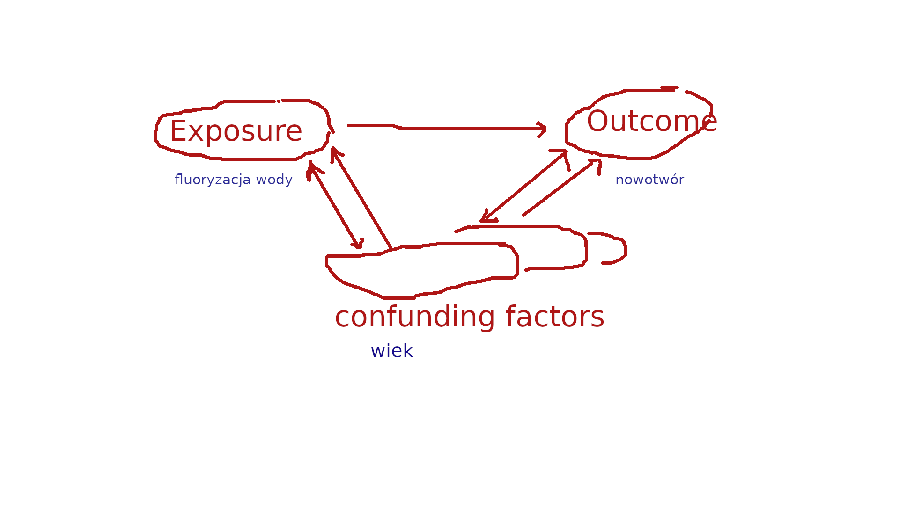

9 Przedmiot i metody badań statystycznych
9.1 Przedmiot statystyki
Wyraz statystyka ma wiele znaczeń: statystyki zgonów albo statystyki alkoholizmu czyli dane dotyczące zgonów lub alkoholizmu. Statystyka to też dziedzina wiedzy, upraszczając zbiór metod, które służą do tworzenia statystyk w pierwszym znaczeniu tego słowa. Wreszcie statystyka to pojedyncza metoda ze zbioru metod opracowanych w dziedzinie, np. średnia to statystyka. Trochę to niefortunne, ale świat nie jest doskonały jak wiemy…
Statystyka (obiegowo): dział matematyki, a w związku z tym wiedza absolutnie pewna i obiektywna. Nieprawda choćby z tego powodu, że nie jest działem matematyki. Korzysta z metod matematycznych jak wiele innych dziedzin.
Statystyka od strony czysto praktycznej to: dane + procedury (zbierania, przechowania, analizowania, prezentowania danych) + programy; Jeżeli statystyka kojarzy się komuś ze matematyką, wzorami i liczeniem, to jak widać jest to zaledwie podpunkt procedury→analizowanie.
9.2 Podstawowe pojęcia
Celem badania statystycznego jest uzyskanie informacji o interesującym zjawisku na podstawie danych. Zjawisko ma charakter masowy czyli dotyczy dużej liczby obiektów. Nie interesuje nas jeden zgon (obiekt) tylko zgony wielu ludzi.
Populacja (zbiorowość statystyczna) to zbiór obiektów będący przedmiotem badania statystycznego. Na przykład zgony w Polsce w roku 2022.
Każdy obiekt w populacji to obserwacja (zwana także jednostką statystyczną albo pomiarem) na jednej lub więcej zmiennych. Jeżeli interesującym zjawiskiem są zgony, obserwacją jest osoba zmarła a zmiennymi wiek, płeć, przyczyna zgonu oraz dzień tygodnia (w którym nastąpił zgon) zmarłej osoby.
Próba to część populacji. Na przykład część zgonów w Polsce w roku 2022.
Parametr: wielkość numeryczna obliczona na podstawie populacji.
Statystyka: wielkość numeryczna obliczona na podstawie próby.
Populacja powinna być zdefiniowana w taki sposób, aby nie było wątpliwości co tak naprawdę jest badane. Zgony to w oczywisty sposób za mało. Zgony mieszkańców Kwidzyna w roku 2022.
Zwróćmy uwagę, że Zgony w mieście Kwidzyn w roku 2022 to nie to samo (ktoś może być mieszkańcem a umrzeć w Polsce i/lub ktoś może nie być mieszkańcem i umrzeć w Kwidzynie.)
Generalizacja: ocena całości na podstawie części. Badamy zjawisko wypalenia zawodowego pielęgniarek i pielęgniarzy w Polsce (populacja). Wobec zaporowych kosztów mierzenia wszystkich decydujemy się na przeprowadzenie ankiety wśród studentów pielęgniarstwa PSW (próba). Czy możemy twierdzić na podstawie próby, że wyniki badania dla całej Polski są identyczne? Raczej nie…
Próba, która pozwala na generalizację nazywa się próbą reprezentatywną. Najlepszym sposobem na uzyskanie próby reprezentatywnej jest losowanie.
W oczywisty sposób badanie na podstawie próby jest tańsze niż badanie całości, co nie oznacza że jest tanie. Kontynuując przykład: musielibyśmy mieć listę wszystkich pielęgniarek i pielęgniarzy w Polsce. Z tej listy wylosować próbę a następnie skontaktować się z wybranymi osobami (jak?). Dlatego też badania w oparciu o próbę nielosową są całkiem popularne (bo są tanie); należy jednakże mieć świadomość ich ograniczeń, w tym a zwłaszcza uogólnienia uzyskanych wyników.
Mądrość statystyczna nt liczebności próby i wnioskowania z próby niereprezentatywnej: badano czy nowy preparat podnosi nośność kur, w 33,3% przypadków podniósł w 33,3% przypadków nie podniósł, a na 33,3 nie wiadomo, bo kura uciekła.
9.3 Pomiar
Potocznie kojarzy się z linijką i wagą ale w statystyce używany jest w szerszym znaczeniu. Ustalenie płci albo przyczyny zgonu to też pomiar.
Pomiar to przyporządkowanie wariantom zmiennej liczb lub symboli z pewnej skali pomiarowej. Przykładowo jeżeli jednostką statystyczną jest zgon a zmiennymi wiek, płeć, przyczyna zgonu oraz dzień tygodnia to pomiar będzie polegał na ustaleniu (przyporządkowaniu) wieku w latach, płci (‘K’/‘M’), przyczyny (identyfikatora z katalogu ICD10 zapewne) oraz numeru dnia tygodnia (lub nazwy dnia tygodnia). Wiek oraz numer dnia są liczbami, płeć i przyczyna symbolem.
Wyróżnia się następujące typy skal pomiarowych:
nominalna (nominal scale), klasyfikuje: płeć zmarłego;
porządkowa (ordinal scale), klasyfikuje i porządkuje: dzień tygodnia w którym nastąpił zgon (po poniedziałku jest wtorek);
liczbowa, mierzy w potocznym tego słowa znaczeniu: wiek zmarłego w latach
Mówimy zmienna mierzalna albo zmienna ilościowa dla zmiennych mierzonych za pomocą skali liczbowej. Mówimy zmienna niemierzalna albo zmienna jakościowa dla zmiennych mierzonych za pomocą skali nominalnej/porządkowej.
Zmienne mierzalne dzielą się na skokowe oraz ciągłe. Skokowe są to cechy, które przyjmują skończoną liczbę wartości, zwykle są to liczby całkowite; Ciągłe są to cechy, które przyjmują dowolne wartości liczbowe z pewnego przedziału liczbowego, np. ciśnienie krwi.
Rodzaje danych
Przekrojowe (zmarli w Kwidzynie)
Czasowe: każda obserwacja ma przypisany czas (liczba zmarłych w Polsce w latach 2000–20222)
Przestrzenne : każda obserwacja ma przypisane miejsce na kuli ziemskiej (współrzędne geograficzne)
9.4 Rodzaje i sposoby analizy danych
Rodzaje analizy statystycznej zależą od rodzaju danych (jakie mamy dane takie możemy stosować metody):
jedna zmienna/dane przekrojowe: analiza struktury
jedna zmienna/dane czasowe: analiza dynamiki zjawiska
co najmniej dwie zmienne: analiza współzależności (nadwaga powoduje cukrzycę)
Sposoby analizy danych zależą od sposobu pomiaru (populacja/próba/generalizacja):
Opis statystyczny – (proste) przedstawienie badanych zbiorowości/zmiennych tabel, wykresów lub parametrów (np. średnia, mediana) ; Opis statystyczny może dotyczyć: – struktury zbiorowości; – współzależności; – zmian zjawiska w czasie.
Wnioskowanie statystyczne: wnioskowanie na temat całości na podstawie próby; wykorzystuje metody analizy matematycznej
Opisujemy populację lub próbę. Wnioskujemy na podstawie próby o całości…
9.5 Sposoby pomiaru danych i organizacja badania
Sposób pomiaru/organizacja badania ma zasadnicze znaczenie dla interpretacji wyników. Są dwa fundamentalne rodzaje pomiaru (sposobu zebrania danych) eksperyment oraz obserwacja.
Mówimy w związku z tym dane eksperymentalne albo dane obserwacyjne.
Przykład: chcemy ustalić czy spożywanie kawy w czasie sesji egzaminacyjnej skutkuje uzyskaniem lepszej oceny. W celu oceny prawdziwości takiej tezy przeprowadzono badanie wśród studentów pytając ich o to ile kawy pili w czasie sesji i zestawiając te dane z wynikami egzaminów. Średnie wyniki w grupie studentów pijących dużo kawy były wyższe w grupie pijącej mało kawy. Czy można powiedzieć, że udowodniono iż picie dużej ilości kawy poprawia wynik egzaminu?
Raczej nie: można sobie wyobrazić, że studenci którzy poświęcili więcej czasu na naukę pili w tym czasie kawę (na przykład żeby nie zasnąć). Prawdziwą przyczyną jest czas poświęcony na przygotowanie a nie to ile ktoś wypił lub nie wypił kawy. Inaczej mówiąc gdyby ktoś pił dużo kawy, bo uwierzył, że to poprawi mu wyniki i się nie uczył, to pewnie by się rozczarował.
Rodzaje badań: eksperymentalne vs obserwacyjne.
Eksperyment kontrolowany (zrandomizowany lub nie): służy do weryfikacja związku przyczyna-skutek. Skutek może być rezultatem działania wielu czynników (zmiennych). Eksperymentator manipuluje wielkością przyczyn (zmiennych niezależnych) oraz mierzy wielkość skutku (zmiennej zależnej); Wszystkie pozostałe czynniki (zmienne ukryte) są kontrolowane (w tym sensie, że ich wpływ na skutek jest ustalony.
Pomiarowi/manipulacji podlega zbiór jednostek podzielonych losowo na dwie grupy: grupa eksperymentalna (experimental group) oraz grupa kontrolna (control group)
W medycynie używa się terminu badania kliniczne czyli badania które dotyczą ludzi. Badania kliniczne także dzielą się na eksperymentalne oraz obserwacyjne. Eksperyment nazywa się RCT (randomized clinical trial/randomizowane kontrolowane badania kliniczne.) Manipulacja określana jest jako ekspozycja (exposure) albo leczenie (treatment) Zmienne ukryte określa się mianem confunding factors (czynniki zakłócające)
Rysunek przedstawia zależność pomiędzy wynikiem (outcome), przyczyną oraz czynnikami zakłócającymi na przykładzie zależności dotyczącej domniemanego wpływu fluoryzowania wody na zwiększenie ryzyka zgonów z powodu nowotworów. W badaniu którego autor uważał że udowodnił związek fluoryzowanie→nowotór porównał on współczynniki zgonów z miast fluoryzujących oraz nie fluoryzujących wodę. Okazało się, że przeciętnie współczynnik ten był wyższy w grupie miast fluoryzujących wodę. Czy to świadczy, że fluoryzowanie wody powoduje raka? Nie…
W innym badaniu tych samych miast okazało się, że w grupie miast fluoryzujących wodę przeciętnie mieszkają starsi ludzie. A ponieważ współczynniki zgonów rosną wraz ze wzrostem wieku, to nie można wykluczyć, że prawdziwą przyczyną obserwowanego zwiększenia wartości współczynników zgonów jest wiek a nie fluoryzacja wody.

Efekt przyczynowy to ilościowe określenie wpływu ekspozycji na wynik poprzez porównanie wielkości wyniku dla różnych wielkości ekspozycji
Są dwa typy efektu przyczynowego: indywidualny efekt interwencji (individual treatment effect) oraz średni efekt interwencji (average treatment effect)
Individual Treatment Effect (ITE)
Indywidualny efekt interwencji (ITE) określa ilościowo wpływ interwencji dla konkretnej osoby, poprzez porównanie wyników dla różnych wartości interwencji.
Mogę pić kawę lub nie pić kawy a wynikiem będzie ocena. Oczywiście nie mogą zrobić tych dwóch rzeczy na raz…
Average Treatment Effect (ATE)
Średni efekt interwencji określa ilościowo wpływ interwencji dla grupy osób
W grupie studentów jedni pili kawę inni nie…
Jeżeli grupa (populacja) została uprzednio podzielona (losowo) na grupę eksperymentalną oraz grupę kontrolną możemy policzyć ATE oddzielnie dla obu grup. Wtedy efekt przyczynowy można zdefiniować jako:
ATT - ATC (albo ATT/ATC)
gdzie: ATT oznacza ATE w grupie eksperymentalnej a ATC oznacza ATE w grupie kontrolnej.
Przykład (kontynuuacja): można przypuszczać, że oprócz kawy na wynik egzaminu ma wpływ np. wrodzone predyspozycje w dziedzinie intelektualnej oraz czas poświęcony na naukę. Aby kontrolować ten czynnik można podzielić losowo grupę studentów; dzięki czemu średnia wielkość predyspozycji oraz czasu w obu grupach będzie podobna. Następnie zalecamy studentom w grupie eksperymentalnej picie 1l kawy dziennie a studentom w grupie kontrolnej podajemy 1l brązowej wody o smaku i zapachu kawy :-). Średnie wyniki w grupie studentów pijących 1l kawy okazały się wyższe niż w grupie pijącej kolorową wodę. Czy można powiedzieć że udowodniono iż picie dużej ilości kawy poprawia wynik egzaminu? Raczej tak…
Badania obserwacyjne można z kolei podzielić na analityczne i opisowe.
W badaniach analitycznych porównuje się grupę kontrolną z grupą poddaną ekspozycji/leczeniu; w badaniach przekrojowych nie ma grupy kontrolnej.
Badania analityczne dzielimy dalej na:
kohortowe,
kliniczno-kontrolne,
przekrojowe.
Badanie kohortowe (cohort study): wieloletnie badania na dużej grupie jednostek. Pomiar zaczynamy od ekspozycji kończymy na wyniku/chorobie/zgonie (takie badanie nazywamy prospektywnym. Problem: koszty (np. choroby rzadkie wymagają ogromnych kohort).
Badanie kliniczno-kontrolne (case-control study): restrospektywna ocena ekspozycji dla jednostek, u których stwierdzono wynik (chorobę). Grupę kontrolną tworzą dopasowane jednostki u których wyniku nie stwierdzono (dopasowane w sensie, że są podobne podobne.) W praktyce badanie kliniczno-kontrolne to badanie chorych, którzy zgłosili się do przychodni; grupą kontrolną są podobni chorzy (wiek, płeć) z innej przychodni :-)
Problem1: błąd pamięci (recall bias) pacjenci – zwłaszcza zdrowi – słabo pamiętają fakty które miały miejsce lata temu. Problem2: trudności z dopasowaniem grupy kontrolnej (łatwiej powiedzieć niż zrobić.)
Badania prospektywne: od przyczyny do skutku (cohort); badanie retrospektywne: od skutku do przyczyny (case-control)
Badanie przekrojowe (cross-sectional study): badanie związku między wynikiem a ekspozycją bez podziału na grupę eksperymentalną i kontrolną.
Problem: nie da się określić związku przyczyna-skutek w taki sposób jaki się stosuje w badaniach analitycznych, ale można do tego celu zastosować model regresji liniowej.
Przykład: badamy grupę pacjentów przychodni onkologicznej. Stwierdzamy że 90% z nich paliło papierosy. Czy z tego wynika że palenie powoduje raka? Niekoniecznie. Możemy dopasować pacjentów o podobnym profilu demograficzno-społecznym z innej przychodni (którzy nie chorują na raka) i stwierdzić że 20% z nich paliło. To już jest konkretny argument – ale takie badanie nie jest już przekrojowe tylko kliniczno-kontrolne.
Przykład (kontynuuacja): można oprócz pytania studentów o ilość kawy i wynik pytać ich jeszcze o czas poświęcony na naukę oraz o średnią ze studiów (wrodzone predyspozycje w dziedzinie intelektualnej). Za pomocą metody regresji możemy ustalić czy i jak bardzo kawa, czas i predyspozycje wpływają na ocenę. Teoretycznie zamiast eksperymentu można używać regresji, ale jest to w większości przypadków trudne–albo zmienne nie da się zmierzyć (czy średnia ze studiów jest dobrą miarą predyspozycji?) albo jakąś ważną zmienną pominiemy. Więcej na temat regresji w rozdziale 3.
Badanie ekologiczne: badanie (przekrojowe) zależności pomiędzy danymi zagregowanymi a nie indywidualnymi. Przykładowo zależność pomiędzy przeciętną wielkością dochodu narodowego, a przeciętną oczekiwaną długością życia np. na poziomie kraju.
Problem: błąd ekologizmu (ecological fallacy.) Zależności na poziomie indywidualnym oraz zagregowanym mogą być różne. Można oczekiwać że im większy dochód tym osoba dłużej żyje (poziom indywidualny.) Jeżeli w kraju występują duże różnice w dochodach (na przykład USA) to przeciętnie dochód jest wysoki, ale jest dużo osób o niskich dochodach, o ograniczonym dostępie do służby zdrowia, i krótszej oczekiwanej długości życia. Przeciętna oczekiwana długość życia na poziomie całego kraju jest niższa (bo jest sumą wysokiej dla bogatych + niskiej dla biednych); w rezultacie zależność na poziomie zagregowanym może się znacząco różnić od tej na poziomie indywidualnym.
9.5.1 Przykłady badań
Jest ustalony szablon artykułu naukowego, który powinien być podzielony na następujące części:
- Wprowadzenie: określenie problemu badawczego, celu badania;
- Materiał i metoda: Opis danych i zastosowanych metod statystycznych
- Wyniki: Rezultaty analiz
- Dyskusja: Znaczenie uzyskanych wyników, jeżeli we wstępie postawiono hipotezy to tutaj należy
Żeby się zorientować jakie dane (jakie zmienne i jak mierzone) oraz jakie metody statystyczne zostały wykorzystane w pracy wystarczy zapoznać się z treścią punktu materiał i metoda. W szczególności powinien tam być określony rodzaj badania: eksperyment, badanie kohortowe, kliniczno-kontrolne, przekrojowe lub inne…
Przykład 1: Czy konsumpcja soli kuchennej szkodzi? (eksperyment)
Neal B. i inni zastosowali eksperyment kontrolowany do zbadania wpływu substytucji chlorku sodu chlorkiem potasu na choroby sercowo-naczyniowe (Effect of Salt Substitution on Cardioviscular Events and Death, New England Journal of Medicine, https://doi.org/10.1056/NEJMoa2105675). W badaniu przeprowadzonym w Chinach, uczestniczyli mieszkańcy 600 wsi, podzieleni losowo na dwie grupy. Uczestnik badania musiał mieć minimum 60 lat oraz nadciśnienie krwi. W badaniu uczestniczyło prawie 21 tysięcy osób. Przez pięć lat trwania eksperymentu grupa kontrolna używała soli zawierającej 75% chlorku potasu oraz 25% chlorku sodu; grupa badana zaś używała soli tradycyjnej czyli zawierającej wyłącznie chlorek sodu. Obserwowano w okresie pięcioletnim w obu grupach liczbę udarów, incydentów sercowo-naczyniowych oraz zgonów. Wpływ substytucji oceniono porównując współczynniki ryzyka w obu grupach.
Przykład 2: Konflikt praca-dom w zawodzie pielęgniarki (przekrojowe)
Simon i inni badali konflikt Praca-Dom w zawodzie Pielęgniarki/Pielęgniarza (Work-Home Conflict in the European Nursing Profession Michael Simon 1, Angelika Kümmerling, Hans-Martin Hasselhorn; Next-Study Group Int J Occup Environ Health 2004 Oct-Dec;10(4):384-91. doi: 10.1179/oeh.2004.10.4.384. https://pubmed.ncbi.nlm.nih.gov/15702752/)
Konflikt Praca-Dom (WHC) to sytuacja kiedy nie można zająć się zadaniami lub obowiązkami w jednej dziedzinie ze względu na obowiązki w drugiej domenie. Teoria zapożyczona z obszaru Nauk o Zarządzaniu zapewne. Ten konflikt jest mierzony odpowiednią skalą pomiarową składającą się z pięciu pytań. Czynnikami które WHC mają powodować są: czas pracy, grafik (w sensie rodzaj etatu/zmianowość), nacisk-na-nadgodziny (występuje lub nie), intensywność pracy, obciążenie emocjonalne oraz jakość zarządzania. (ostatnie trzy mierzone odpowiednimi skalami pomiarowymi, czytaj: serią pytań w ankiecie). Badano 27,603 osoby. Podstawowym narzędziem badawczym jak się łatwo domyśleć była ankieta, a przyczyny WHC ustalono za pomocą metody regresji wielorakiej.
Teraz porówajmy koszty badania #1, w którym jedynie starano się ustalić że sól szkodzi (lub nie) z badaniem #2, w którym starano się ustalić przyczyny stanów psychicznych badanych-:)
9.6 Miary częstości chorób
Populacja narażona (population at risk): grupa osób podatnych na zdarzenie (chorobę); rak szyjki macicy dotyczy kobiet a nie wszystkich.
Współczynnik chorobowości (prevalence rate): liczba chorych w określonym czasie (dzień, tydzień, rok) podzielona przez wielkość populacji narażonej. Ponieważ są to zwykle bardzo małe liczby, mnoży się wynik przez \(10^n\) dla ułatwienia interpretacji. Czyli jeżeli chorych w populacji narażonej o wielkości 1mln jest 20 osób, to współczynnik wynosi 20/1mln = 0,000002 co trudno skomentować po polsku. Jeżeli pomnożymy owe 0,000002 przez 100 tys (\(n=5\)), to współczynnik będzie równy 2, co interpretujemy jako dwa przypadki na 100 tys. (albo 0,2 na 10 tys, jeżeli \(n=4\), co już jednak brzmi trochę gorzej.)
Współczynnik zapadalności (incidence rate): liczba nowych chorych w określonym czasie (dzień, tydzień, rok) podzielona przez wielkość populacji narażonej. Też zwykle pomnożona przez \(10^n\)
Współczynnik śmiertelności (case fatality rate): liczba zgonów z powodu X w określonym czasie (dzień, tydzień, rok) podzielona przez liczbę chorych na X w tym samym czasie. Śmiertelność jest miarą ciężkości choroby X.
Współczynnik zgonów (death rate): liczba zgonów w określonym czasie przez średnią liczbę ludności w tym czasie (pomnożone przez \(10^n\)).
Jeżeli współczynnik zgonów nie uwzględnia wieku, nazywany jest surowym (crude); grupy różniące się strukturą wieku nie powinny być porównywane za pomocą współczynników surowych tylko standaryzowanych (age-standardized albo age-adjusted). Przykładowo jeżeli porównamy współczynnik zgonów USA i Nigerii to okaże się że w USA jest wyższy a to z tego powodu że społeczeństwo amerykańskie jest znacznie starsze (a umierają zwykle ludzie starzy)
Współczynnik zgonów standaryzowany według wieku to ważona średnia współczynników w poszczególnych grupach wiekowych, gdzie wagami są udziały tychże grup wiekowych w pewnej standardowej populacji
9.7 Oprogramowanie
Nie da się praktykować statystyki bez korzystania z programów komputerowych i mamy w tym zakresie trzy możliwości:
Arkusz kalkulacyjny. Przydatny na etapie zbierania danych i ich wstępnej analizy, później już niekoniecznie. Policzenie niektórych rzeczy jest niemożliwe (brak stosownych procedur) lub czasochłonne (w porównaniu do 2–3)
Oprogramowanie specjalistyczne komercyjne takie jak programy STATA czy SPSS. Wady: cena i czas niezbędny na ich poznanie.
Oprogramowanie specjalistyczne darmowe: Jamovi oraz R Same zalety:-)
W większości podręczników opisuje się procedury oraz program, w którym te procedury można zastosować jednocześnie. My zdecydowaliśmy się oddzielnie przestawić teorię statystyki (rozdziały 1–4) a oddzielnie opis posługiwania się konkretnym programem (rozdział 5.)